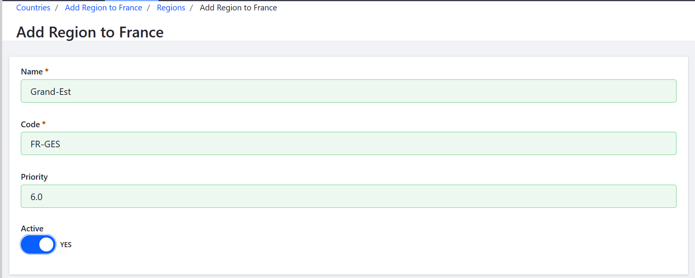

Adding Regions¶
This article describes to how to add states, provinces, or other administrative regions in Liferay Commerce. By default only the United States and Italy have all of their respective country』s states and provinces listed in the Countries settings.
Navigate to the Control Panel → Commerce → Settings.
Click Countries.
Click on a country (France in this example).
Click Regions.
Click the blue (+) button to add a region.
Enter the following:
- Name: Grand-Est
- Code: FR-GES
- Priority: 6.0
Switch the toggle to Active.

Click Save.
The French region Grand-Est is now added to the list of regions. Grand-Est will appear in the Region list if France is chosen in the Country field on the Shipping Address page. Repeat these steps as necessary.
Additional Information¶
Note 1: The values in the Code field must follow the ISO-3166-2 standard』s format.
Note 2: The priority field may be used to manually rank regions as needed.